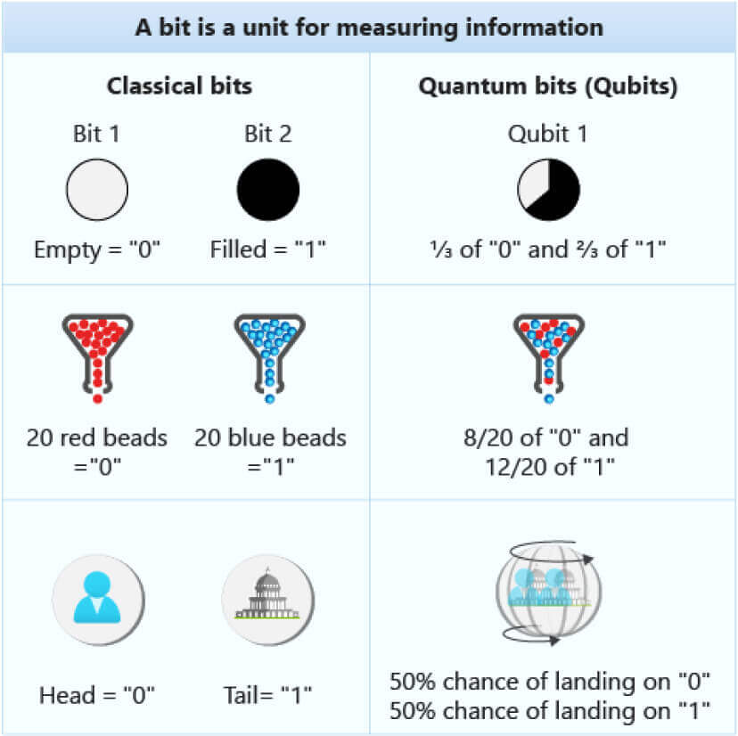

Quantum Computing
In recent years, the use of pratical computing has began to show its slowing in performace, especially in applications that require lots of computation.That's why companies and organizations are beginning to utilize quantum mechanics with computing; you get more accurate/faster results with quantum computing. (IBM)
Right now, quantum computers are still in development being used only in situations where problems of extremely high complexity must be solved. Researchers are trying to make quantum computers both even faster & more accessible.
How does it work?
Quantum Computers are more power efficient due to their smaller silicon wafers (i.e. what makes the chips). While the usual system represents data & operations as bits (1s and 0s), a quantum computer represents data as qubits (IBM).Qubits store data as a fraction of 0s an 1s, i.e 1/3 of 0 and 2/3 of 1 (Microsoft). 
Quantum Computers need to be very cold; they usually run at about 0.01*C (IBM). This is to make the electrons flow through a quantum processor without any resistance, making these chips "supercoductors" (IBM).